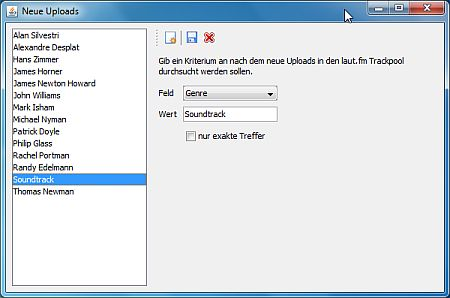
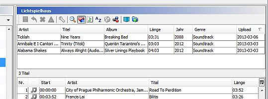

Station Admin kann für Dich automatisch die neuesten Uploads im laut.fm-Pool nach vorgegebenen Kriterien wie z. B. bestimmten Artists oder Genres durchsuchen. Das geschieht im Hintergrund. Die Ergebnisse werden gespeichert und können jederzeit angesehen werden.
Suchkriterien festlegen

Öffne im -Menü. Hier kannst Du Deine Suchkriterien anlegen, bearbeiten oder löschen. Ein Suchkriterium behinhaltet jeweils
Du kannst auch neue Suchkriterien für Artists anlegen in dem Du in einer Playlist oder in "Meine Titel" Titel auswählst und auswählst.
Es werden maximal die 2500 neuesten Uploads durchsucht - das entspricht in etwa dem was innerhalb von zwei Tagen hochgeladen wird. Es gibt also keine Garantie dass alle Uploads gefunden werden wenn Station Admin ein paar Tage nicht gelaufen ist.
Ergebnisse anschauen

Klick in der Toolbar der Playlist-Ansicht auf - dies blendet die Liste den neuen Uploads ein die Deinen Suchkriterien entsprechen. Du kannst Titel aus dieser Liste per Copy & Paste oder Drag & Drop in die Playlist ziehen.
Uploads die für Dich nicht interessant sind kannst Du über das Kontextmenü oder durch drücken der Entfernen-Taste löschen.